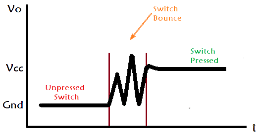

The buttons I use have two metal contacts that push together when pressing the button. However, when the metal contacts come together, they generate multiple signals as the gap closes or opens. Therefore, my program usually detects multiple presses while I push the button.
 Graph of the signal bounce during a button press. To get rid of bouncing signals, debouncing is required. Hardware debouncing requires additional circuits or devices to complete. Therefore, software debouncing would be better in this situation. However, one of the drawbacks of software debouncing in the main program is that it would degrade performance. If software debouncing is added to the main program, it creates delays in the program. In my case, I decided to create a new thread for the button signal reading. This guarantees that the bouncing signal is ignored, while allowing the main program to continue running. By adding the code above, the program starts a new thread dedicated to reading the button only, and two new booleans are created. Then, the thread,
(Credits: https://circuitdigest.com/electronic-circuits/what-is-switch-bouncing-and-how-to-prevent-it-using-debounce-circuit)
Solution
global button1_pressed, button2_pressed
button1_pressed = False
button2_pressed = False
def button_reader_thread():
global button1_pressed, button2_pressed
while True:
if button1.value() == 1 and button1_pressed == False:
button1_pressed = True
utime.sleep(0.01)
if button2.value() == 1 and button2_pressed == False:
button2_pressed = True
utime.sleep(0.01)
_thread.start_new_thread(button_reader_thread(), ())button_reader_thread(), will continuously monitor the two buttons as the program runs. Whenever button_reader_thread() detects a button press, it changes the corresponding boolean to True, which passes back to the main program to signal a button press. After that, the button_reader_thread() times out for 0.01 seconds to ignore the bouncing signals. When the main program finishes reading the button press, it can change the boolean back to False to detect the next button press. This is a simple solution for reading button presses without affecting performance.